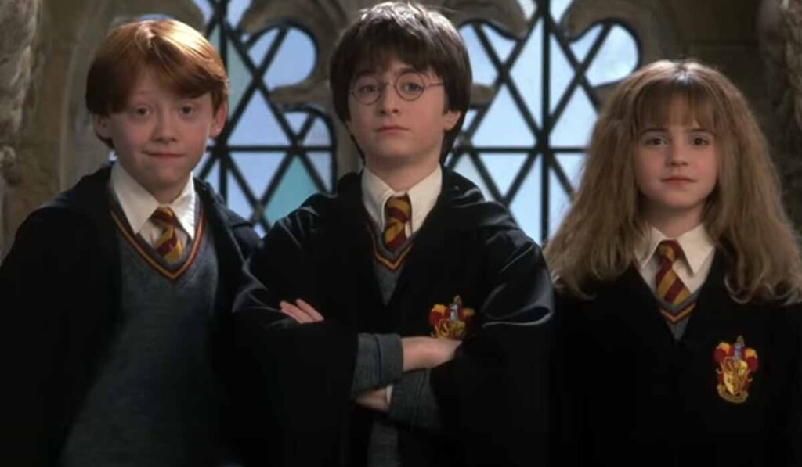

Sobre Harry Potter
Harry Potter é um garoto órfão que teve os pais assassinados quando tinha um ano por Lorde Voldemort, o bruxo das trevas mais poderoso de seu tempo que tentou matar Harry na mesma noite, porém quem acabou quase morto foi o próprio assassino. Já Harry escapara ileso, apenas com uma cicatriz em forma de raio na testa.
